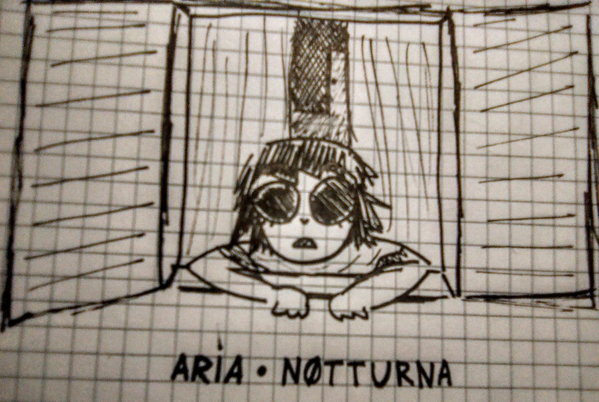
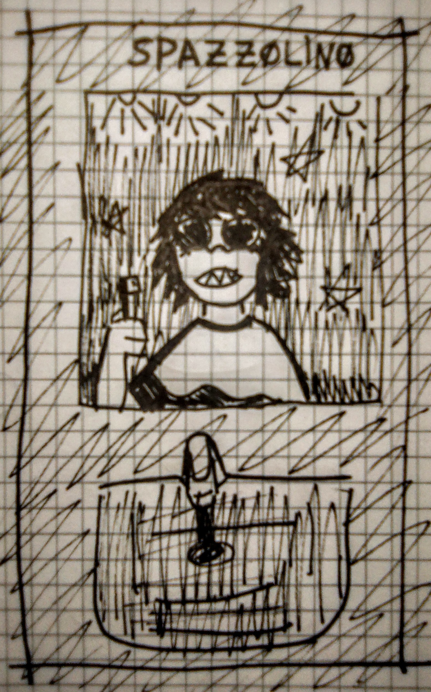
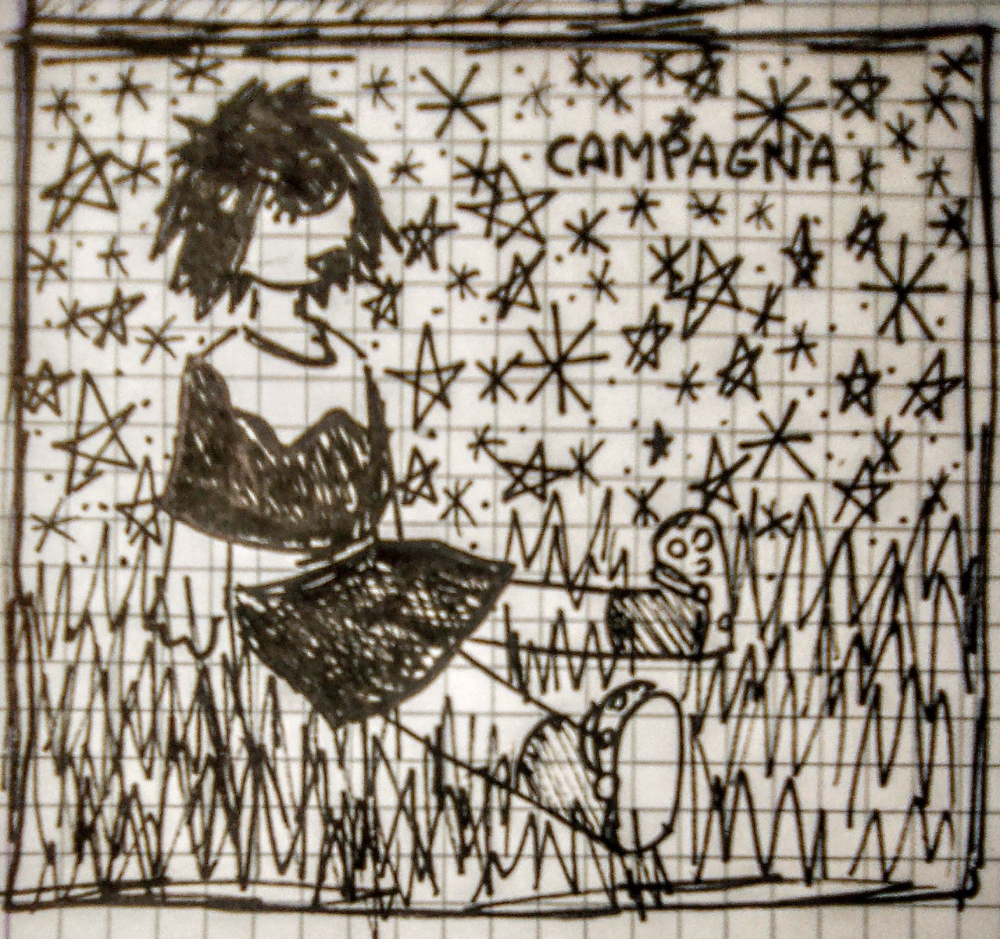
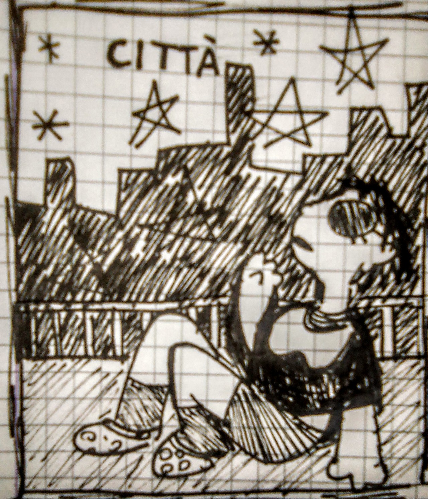
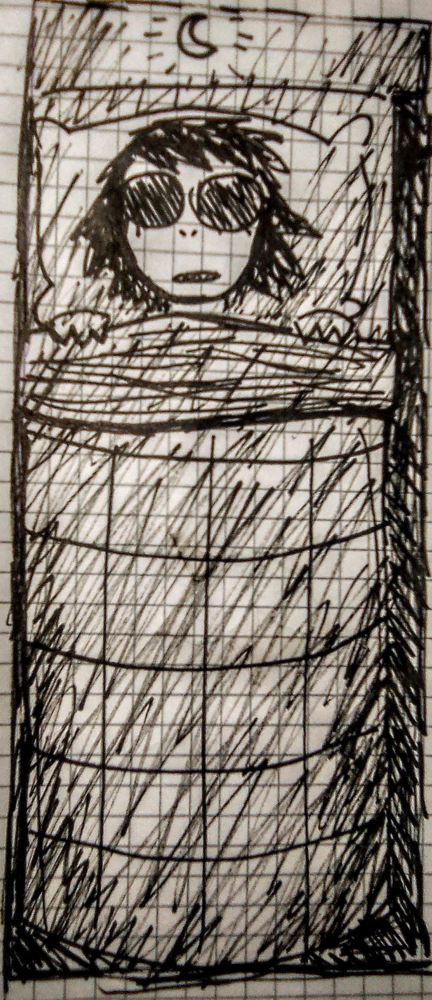
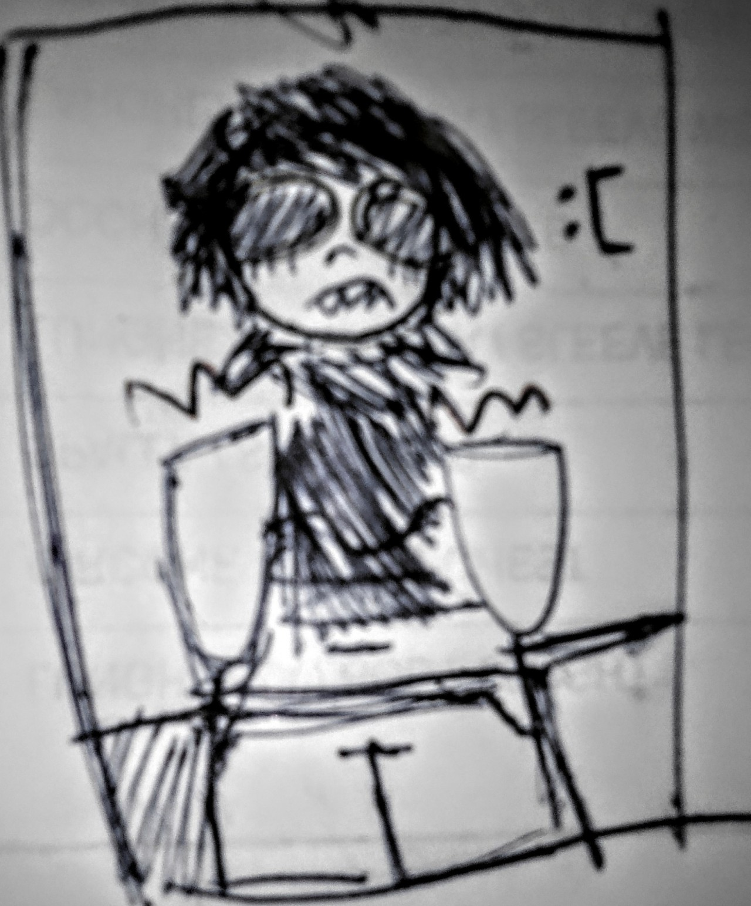
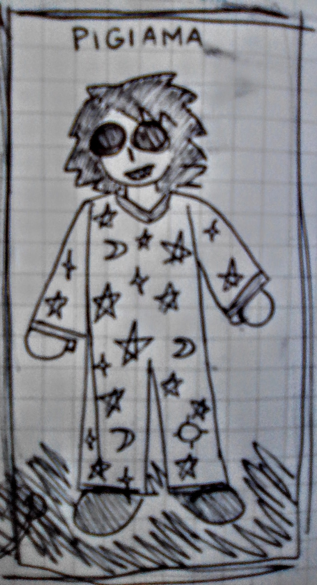
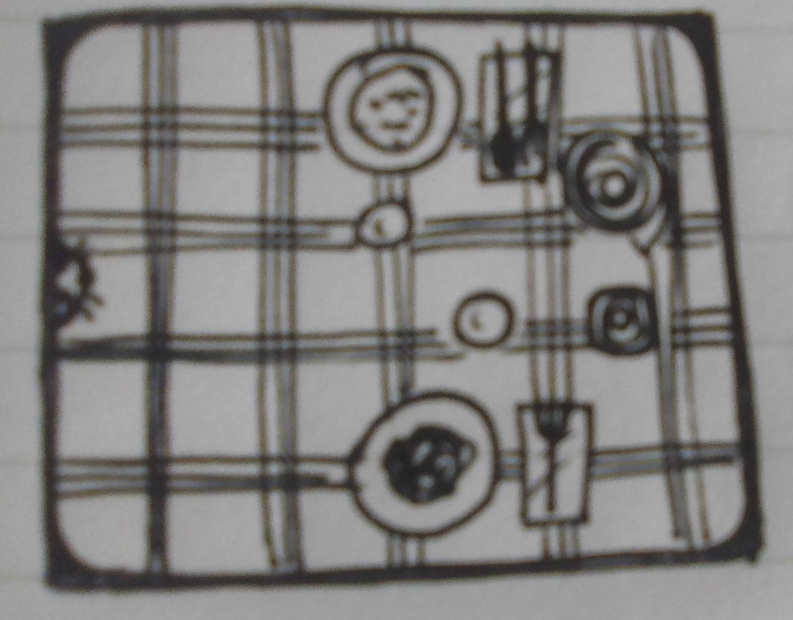

Aria Notturna
Disegni a penna in bianco e nero di Zero. Zero ha 14 anni e ha gli occhi completamente neri, sclera compresa. Zero ha indosso un poncho, pantaloncini, pantofole e calzini, ha i denti aguzzi e la carnagione chiara. Zero non sorride molto. A Zero piace guardare le stelle.

Aria Notturna
Zero apre le ante della finestra della sua cameretta buia, sposta le tende, e ammira le stelle dal davanzale.

Spazzolino
Zero si guarda nello specchio sopra il lavandino. Quattro lampade fanno brillare i denti che Zero ha appena lavato. Zero tiene in mano lo spazzolino e l'acqua scorre.

Campagna
Il cielo, in campagna, è pieno di stelle, quindi Zero si siede sul prato ad ammirarle.

Città
Dalla terrazza di casa sua Zero riesce a vedere le stelle più luminose e le sagome dei palazzi vicini.

Letto
Zero è sotto le coperte e ha acceso la sua luce notturna a forma di luna,
ma non riesce a dormire e resta per un po’ a fissare il soffitto con gli occhi spalancati.

Scuola
Zero si alza con il broncio per il suo primo giorno di scuola. Deve mettere dei pantaloncini di jeans bianchi e un maglione di lana grigio con le maniche bianche.

Pigiama
Zero è felice e sorride perché ha un nuovo pigiama con tante piccole stelline e lune.

Tavola
Sulla tavola che Zero ha apparecchiato, ci sono due piatti, due bicchieri, due paia di posate, un rotolo di tovaglioli, e un gatto curioso che sporge il muso sopra la tovaglia.